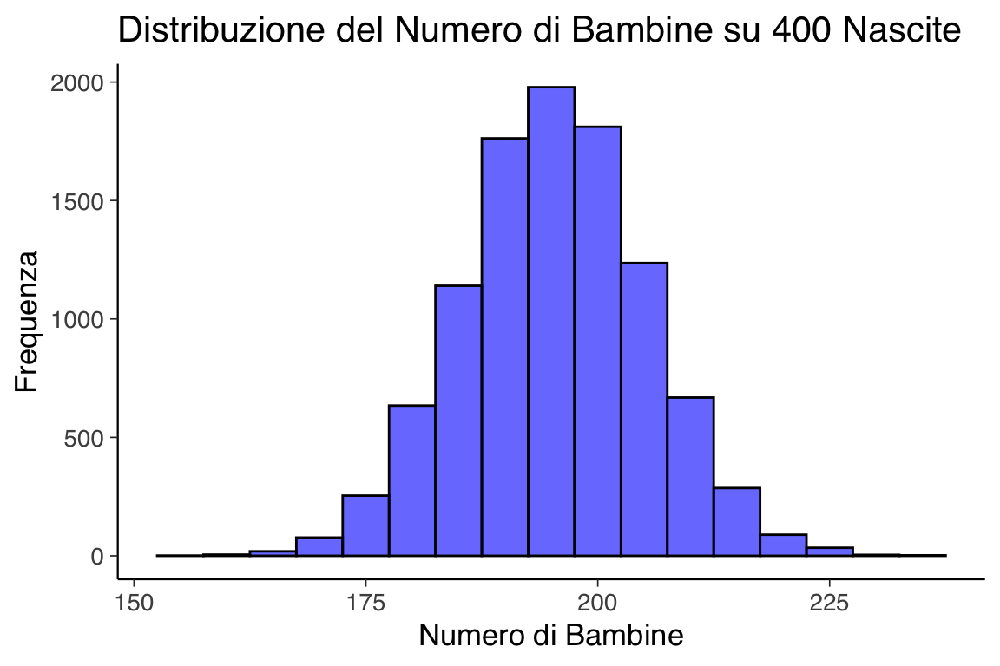
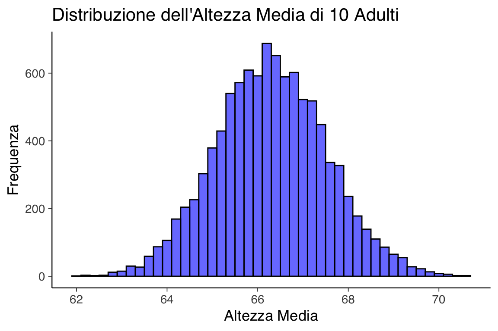

here::here("code", "_common.R") |>
source()
# Load packages
if (!requireNamespace("pacman")) install.packages("pacman")
pacman::p_load(tidyr)40 Simulazioni
Prerequisiti
- Leggere Regression and Other Stories. Focalizzati sul capitolo 5.
Concetti e Competenze Chiave
Preparazione del Notebook
40.1 Introduzione
In questo capitolo, discuteremo alcuni esercizi di simulazione presentati da Gelman et al. (2021) nel quinto capitolo del loro libro. Gli autori sottolineano che simulare variabili casuali è essenziale nelle statistiche applicate per diversi motivi:
Comprensione della variazione casuale: I modelli di probabilità imitano la variabilità del mondo reale. La simulazione aiuta a sviluppare intuizioni sulle oscillazioni casuali nel breve termine e sui loro effetti nel lungo termine.
Distribuzione campionaria: Simulare dati consente di approssimare la distribuzione campionaria, trasferendo questa approssimazione alle stime e alle procedure statistiche.
Previsioni probabilistiche: I modelli di regressione producono previsioni probabilistiche. La simulazione è il metodo più generale per rappresentare l’incertezza nelle previsioni.
40.2 Esempio 1: Quante bambine su 400 nascite?
Supponiamo che la probabilità di nascita di una bambina sia \(p\) = 0.488. Se in un ospedale nascono 400 bambini in un anno, quante saranno bambine? Possiamo simulare questo processo usando una distribuzione binomiale, ripetendo la simulazione 10,000 volte.
# Numero di simulazioni
n_sims <- 10000
# Probabilità di nascita di una bambina
p_girl <- 0.488
# Simulazione del numero di bambine
set.seed(123)
n_girls <- rbinom(n_sims, size = 400, prob = p_girl)
# Visualizzazione dell'istogramma
ggplot(data.frame(n_girls), aes(x = n_girls)) +
geom_histogram(binwidth = 5, fill = "blue", color = "black", alpha = 0.6) +
labs(
title = "Distribuzione del Numero di Bambine su 400 Nascite",
x = "Numero di Bambine",
y = "Frequenza"
)
40.3 Simulazione di probabilità continue
Gelman et al. (2021) dimostrano come sia possibile incorporare anche distribuzioni di probabilità continue nei tipi di simulazioni discusse nella sezione precedente. Forniscono il seguente esempio di un modello misto discreto/continuo: il 52% degli adulti negli Stati Uniti sono donne e il 48% sono uomini. L’altezza degli uomini segue approssimativamente una distribuzione normale con una media di 69.1 pollici e una deviazione standard di 2.9 pollici; per le donne, la media è 63.7 pollici e la deviazione standard è 2.7 pollici. Ecco il codice per generare l’altezza di un adulto scelto casualmente:
Supponiamo di selezionare 10 adulti a caso. Cosa possiamo dire della loro altezza media?
set.seed(123)
n_sims <- 10000
avg_heights <- replicate(n_sims, simulate_height(10))
# Visualizzazione dell'istogramma
ggplot(data.frame(avg_heights), aes(x = avg_heights)) +
geom_histogram(binwidth = 0.2, fill = "blue", color = "black", alpha = 0.6) +
labs(
title = "Distribuzione dell'Altezza Media di 10 Adulti",
x = "Altezza Media",
y = "Frequenza"
)
40.4 Sommario di una simulazione con media e mediana
Quando le nostre distribuzioni sono costruite come simulazioni al computer, può essere conveniente riassumerle in qualche modo. Tipicamente, riassumiamo la posizione di una distribuzione con la sua media o mediana.
La variazione nella distribuzione è tipicamente riassunta dalla deviazione standard, ma spesso preferiamo usare la deviazione mediana assoluta. Se la mediana di un insieme di simulazioni \(z_1, \ldots, z_n\) è \(M\), allora la deviazione mediana assoluta è:
\[ \text{mad} = \text{mediana}_{n} |z_i - M| \]
Tuttavia, poiché siamo abituati a lavorare con le deviazioni standard, quando calcoliamo la deviazione mediana assoluta, la riscaliamo moltiplicandola per 1.483, il che riproduce la deviazione standard nel caso speciale della distribuzione normale:
\[ 1.483 * \text{median}(|y - \text{median}(z)|) \]
Preferiamo tipicamente i riassunti basati sulla mediana perché sono più stabili computazionalmente, e riscaliamo il riassunto basato sulla mediana della variazione come descritto sopra in modo da essere comparabile alla deviazione standard, che sappiamo già interpretare nella pratica statistica usuale.
Ecco come implementare quanto sopra in R per i dati relativi all’altezza media di 10 adulti.
# Calcolo della media e mediana
mean_avg_height <- mean(avg_heights)
median_avg_height <- median(avg_heights)
# Calcolo della deviazione standard
sd_avg_height <- sd(avg_heights)
# Calcolo della MAD (Deviazione Mediana Assoluta)
mad_avg_height <- median(abs(avg_heights - median_avg_height)) * 1.483
# Risultati
cat("Mean:", mean_avg_height, "\n")
#> Mean: 66.3
cat("Median:", median_avg_height, "\n")
#> Median: 66.3
cat("Standard Deviation:", sd_avg_height, "\n")
#> Standard Deviation: 1.23
cat("MAD (scaled):", mad_avg_height, "\n")
#> MAD (scaled): 1.2340.4.1 Intervalli di Incertezza
Per rappresentare l’incertezza, possiamo calcolare intervalli centrali al 50% e al 95%.
# Intervalli di incertezza
lower_50 <- quantile(avg_heights, 0.25)
upper_50 <- quantile(avg_heights, 0.75)
lower_95 <- quantile(avg_heights, 0.025)
upper_95 <- quantile(avg_heights, 0.975)
cat("50% Interval:", lower_50, "-", upper_50, "\n")
#> 50% Interval: 65.5 - 67.1
cat("95% Interval:", lower_95, "-", upper_95, "\n")
#> 95% Interval: 63.9 - 68.8Ecco come interpretarli.
Intervallo centrale al 50%.
- Contiene i valori centrali che coprono il 50% della distribuzione. Questo intervallo si estende dal primo quartile (25° percentile) al terzo quartile (75° percentile).
- Indica la fascia di valori in cui si trovano i risultati “più comuni” o tipici. È una misura di variabilità concentrata nella parte centrale della distribuzione, meno sensibile a valori estremi.
- Per le altezze medie simulate di 10 adulti, un intervallo centrale al 50% che va da 65 a 67 pollici indica che metà delle medie osservate si trova in questo intervallo.
Intervallo centrale al 95%.
- Contiene il 95% della distribuzione simulata, lasciando solo il 2.5% dei valori al di sotto e il 2.5% al di sopra dell’intervallo. Questo intervallo si calcola tra il 2.5° percentile e il 97.5° percentile.
- Indica una fascia più ampia che cattura quasi tutti i valori plausibili, inclusi quelli meno probabili ma comunque possibili.
- Per le altezze medie simulate, un intervallo al 95% che va da 64 a 68 pollici significa che, in quasi tutte le simulazioni, l’altezza media si trova in questo intervallo, con poche eccezioni.
40.5 Commenti e Considerazioni Finali
Lo scopo della simulazione di dati fittizi non è fornire intuizioni sui dati o sul problema reale in esame, ma piuttosto valutare le proprietà dei metodi statistici utilizzati, partendo da un modello generativo ipotizzato. Le simulazioni sono cruciali nella pratica della ricerca. Molti autori suggeriscono che dovrebbero essere eseguite prima di raccogliere i dati di uno studio, per valutare, tra le altre cose, se la dimensione campionaria prevista fornisce un potere statistico sufficiente per rispondere alla domanda della ricerca (Gelman & Brown, 2024).
40.6 Esercizi
Esercizio 40.1 Immagina il caso di 220 studenti che devono sostenere tre prove in itinere in un corso. Il voto finale è la media dei voti ottenuti in queste tre prove. Le distribuzioni dei voti per le prove sono descritte come segue:
- Prima prova: I voti sono distribuiti secondo una gaussiana con media 24. Il 15% degli studenti ottiene un voto inferiore a 18.
- Seconda prova: I voti sono distribuiti secondo una gaussiana con media 25. Il 10% degli studenti ottiene un voto inferiore a 18.
- Terza prova: I voti sono distribuiti secondo una gaussiana con media 26. Solo il 5% degli studenti ottiene un voto inferiore a 18.
Dei 220 studenti iniziali:
- Il 10% non partecipa alla prima prova.
- Un ulteriore 5% non partecipa alla seconda prova.
Per ottenere il voto finale, uno studente deve partecipare a tutte e tre le prove.
Utilizzando una simulazione, trova la media finale dei voti e calcola l’intervallo di incertezza al 90% per la stima della media.
Informazioni sull’Ambiente di Sviluppo
sessionInfo()
#> R version 4.4.2 (2024-10-31)
#> Platform: aarch64-apple-darwin20
#> Running under: macOS Sequoia 15.2
#>
#> Matrix products: default
#> BLAS: /Library/Frameworks/R.framework/Versions/4.4-arm64/Resources/lib/libRblas.0.dylib
#> LAPACK: /Library/Frameworks/R.framework/Versions/4.4-arm64/Resources/lib/libRlapack.dylib; LAPACK version 3.12.0
#>
#> locale:
#> [1] C/UTF-8/C/C/C/C
#>
#> time zone: Europe/Rome
#> tzcode source: internal
#>
#> attached base packages:
#> [1] stats graphics grDevices utils datasets methods base
#>
#> other attached packages:
#> [1] see_0.9.0 gridExtra_2.3 patchwork_1.3.0 bayesplot_1.11.1
#> [5] psych_2.4.6.26 scales_1.3.0 markdown_1.13 knitr_1.49
#> [9] lubridate_1.9.4 forcats_1.0.0 stringr_1.5.1 dplyr_1.1.4
#> [13] purrr_1.0.2 readr_2.1.5 tidyr_1.3.1 tibble_3.2.1
#> [17] ggplot2_3.5.1 tidyverse_2.0.0 rio_1.2.3 here_1.0.1
#>
#> loaded via a namespace (and not attached):
#> [1] utf8_1.2.4 generics_0.1.3 stringi_1.8.4 lattice_0.22-6
#> [5] hms_1.1.3 digest_0.6.37 magrittr_2.0.3 evaluate_1.0.1
#> [9] grid_4.4.2 timechange_0.3.0 fastmap_1.2.0 rprojroot_2.0.4
#> [13] jsonlite_1.8.9 fansi_1.0.6 mnormt_2.1.1 cli_3.6.3
#> [17] rlang_1.1.4 munsell_0.5.1 withr_3.0.2 yaml_2.3.10
#> [21] tools_4.4.2 parallel_4.4.2 tzdb_0.4.0 colorspace_2.1-1
#> [25] pacman_0.5.1 vctrs_0.6.5 R6_2.5.1 lifecycle_1.0.4
#> [29] htmlwidgets_1.6.4 pkgconfig_2.0.3 pillar_1.9.0 gtable_0.3.6
#> [33] glue_1.8.0 xfun_0.49 tidyselect_1.2.1 farver_2.1.2
#> [37] htmltools_0.5.8.1 nlme_3.1-166 labeling_0.4.3 rmarkdown_2.29
#> [41] compiler_4.4.2Bibliografia
Gelman, A., & Brown, N. J. (2024). How statistical challenges and misreadings of the literature combine to produce unreplicable science: An example from psychology.
Gelman, A., Hill, J., & Vehtari, A. (2021). Regression and other stories. Cambridge University Press.